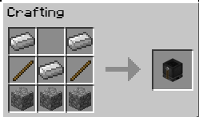

¶Tavírna
iDo tavírny vložíš vyrobený předmět (nástroj, zbraň nebo zbroj) a dostaneš zpět část suroviny, ze které byl vyroben.
¶Jak se vyrábí
Do crafting stolu ulož ingoty, tyčky a dlažební kameny podle obrázku:

| Řada | Políčka |
|---|---|
| 1 | železný ingot, prázdné políčko, železný ingot |
| 2 | tyčka, železný ingot, tyčka |
| 3 | dlažební kámen × 3 |
Výsledkem je 1 blok Unsmeltery (tavírna).
¶Jak se používá
- Polož tavírnu na zem a otevři ji pravým klikem.
- Vlož předmět, který chceš rozebrat, a palivo.
- Rozebírání jednoho předmětu trvá 20 sekund.
¶Kolik dostaneš zpět
- Dostaneš polovinu ceny výroby, zaokrouhleno dolů.
- Platí to pro předmět s plnou trvanlivostí. Poškozený předmět vrátí méně.
- Pokud by výsledek vyšel nula, předmět do tavírny nevložíš.
- Tavírna zná přes 500 předmětů, vanilla i ze Středozemě.
iPokud je předmět vyrobený z různých kovů, vrátí se ten nejvzácnější z nich, ale jen v celých ingotech.
!Zaokrouhluje se dolů, takže předmět vyrobený z jedné suroviny nevrátí nic.
![OVĚŘIT] Přesné počty vrácených ingotů u předmětů ze Středozemě a zda se okno tavírny zobrazí správně na ostrém serveru (zkouška na ostrém serveru zatím neproběhla).
© Všechna práva vyhrazena tvůrcům módů, naším výtvorem je pouze zprostředkování serveru. Nejedná se o oficiální produkt Minecraftu. Nejsme spojeni s Mojang Studios.